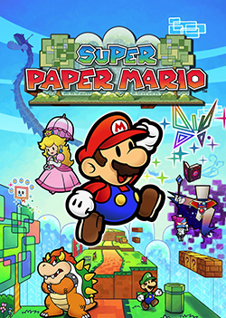

My Top 5 Favorite Videogames




Despite being one of the most hated games in the Paper Mario Franchise, Super Paper Mario is one of my favorite games because of its unique gameplay mechanics and great storytelling. It's so hated because its gameplay mechanics are really different from the usual turn-based RPG style of Paper Mario. This game was a platformer where you had the ability to switch to a 3d backview perspective. This allowed the developers to make clever puzzles that required you to switch perspectives. Sometimes, finding the way to progress farther into the stage can be difficult so finally finding the solution is super rewarding. The writing in the game is really good as well. All of the characters are memorable, and it gives more narrative substance to a Mario game that mainstream Mario games don't really accomplish.
Kirby is my second favorite Nintendo franchise, and it all started with this game. When this game came out, it was a revamp and a revival of the Kirby series. Even though this game did not change the main gameplay style of the Kirby series, it brought the series into a polished 3D look. When I played this game many years ago, I was always engaged because of the variety of copy abilities. The stages are also so vibrant and detailed. While playing this game, I would always be excited to get to the next stage because I knew that there would be something creative and new waiting for me. This game left such an impact on me that Kirby is even my main in Smash Bros.

I am going to sound like a broken record but The Legend of Zelda: Breath of the Wild is one of the best games ever. It masters making the player feel like they are in an open world with the amount of detail and uniqueness they put in the map. Another reason why people adore this game, including myself, is because you truly feel like you can do whatever you want. The game does give you main story quests to complete but those are more of suggestions than manditory things you need to do to beat the game. Once you beat the tutorial, you can go straight into Hyrule Castle and defeat the main boss, Calamity Ganon. It kind of reminds me of that one Skyrim meme where you complete the tutorial and then the game tells you to kill god. The writing in this game is also great because it masters the ability of show don't tell which makes for engaging and memorable side characters. The reason this is only middle on the list is because the next two videogames have a lot of nostalgic importance to me but with nostalgia out of the way this would be number 1 on the list.